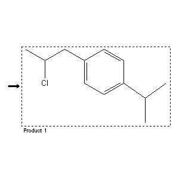

|  |
| FA | RX(1); FLST(1); RX(1) |
Reaction (1 of 1)
| Reaction ID | 7277899 |
| Product BRN | 2084881 |
| Product | 1-(2-chloro-propyl)-4-isopropyl-benzene |
| No. of Reaction Details | 1 |
Reaction Details (1 of 1)
| Reaction Classification | Preparation (half reaction) |
| Citation Pointer | 4109508; Patent; Magerramov et al.; SU 249356; 1969; RZKHAR; Ref.Zh.Khim.; RU; 14; N172P; 1970; |
Reference (1 of 1)
| Citation Number | 4109508 |
| Document Type | Patent |
| Patent Author | Magerramov et al. |
| Patent Number | SU 249356 |
| Patent Year | 1969 |
| CODEN | RZKHAR |
| Journal Title | Ref.Zh.Khim. |
| Language Code | RU |
| (Series) Volume | 14 |
| Number | N172P |
| Publication Year | 1970 |